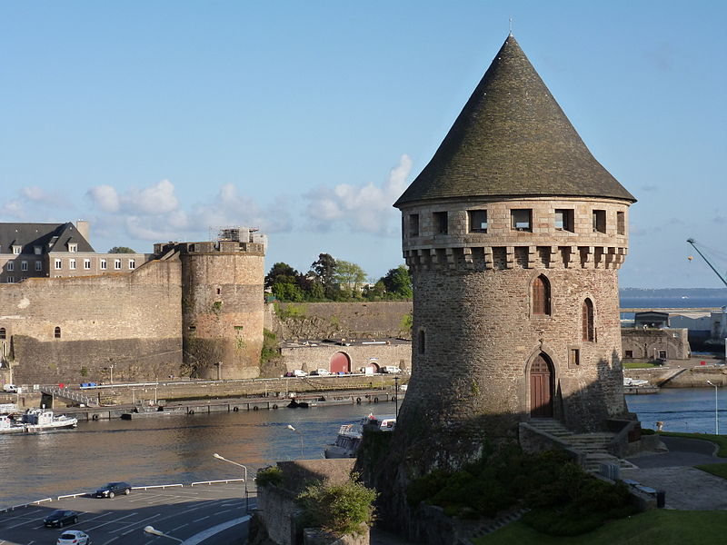

Jassim's Biography
Hello! My name is Jassim, and I was born on September 24, 2002, in Dar Bouazza, a charming coastal village near Casablanca, Morocco. From a young age, I have been fascinated by the world of science fiction, which has shaped many of my interests and aspirations.
Dar Bouazza, located just 15 kilometers from the bustling city of Casablanca, offers a serene escape from the chaos of urban life. This picturesque village is a harmonious blend of tranquility and natural beauty, making it an inspiring place to grow up.
I gained interest in science fiction due to games and movies, such as Crysis 2 and Akira, which pushed me to explore this fascinating world even more!
In 2020, at just 17 years old (almost 18), I moved to Brest, France, to begin my studies. Initially, I had planned to study a different field, but somewhere mid-flight, I decided to pursue computer science instead! 😂
